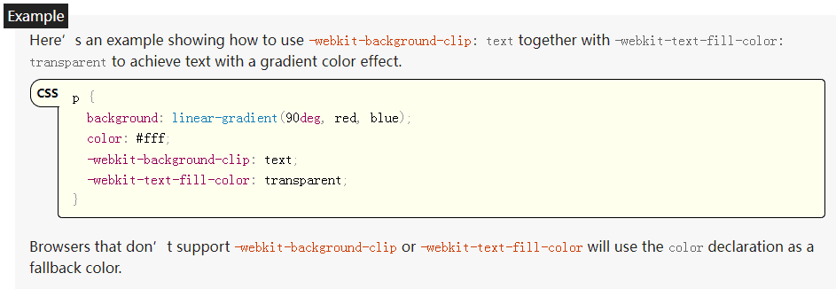

background: -webkit-linear-gradient(315deg,#42d392 25%,#647eff);
background-clip: text;
-webkit-background-clip: text;
-webkit-text-fill-color: transparent;
background-clip: text

text-fill-color
mdn和whatwg网站都有相关的例子,如下截图:
